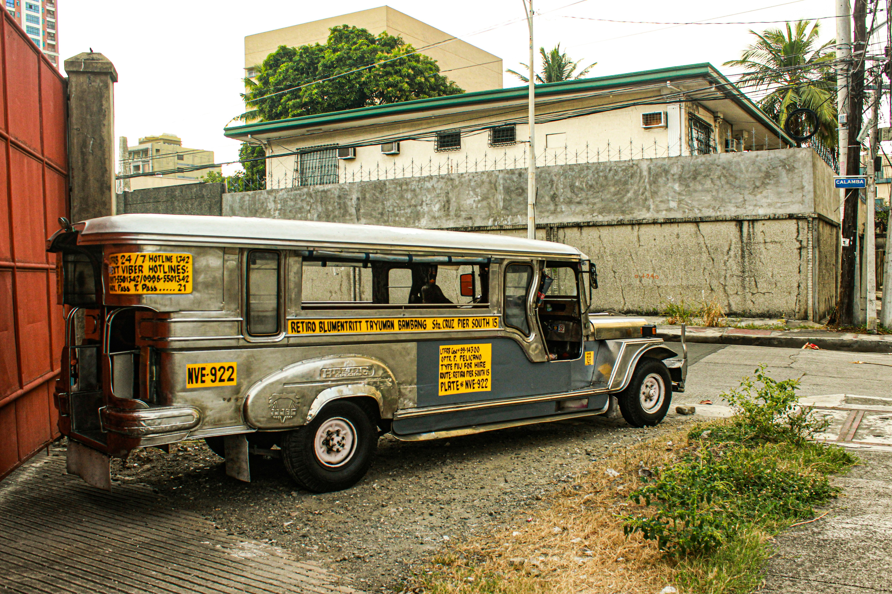
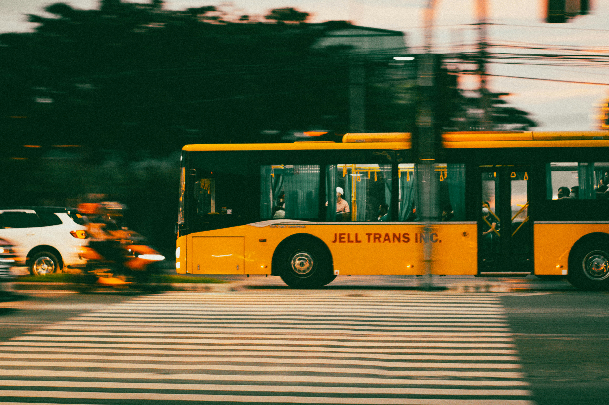
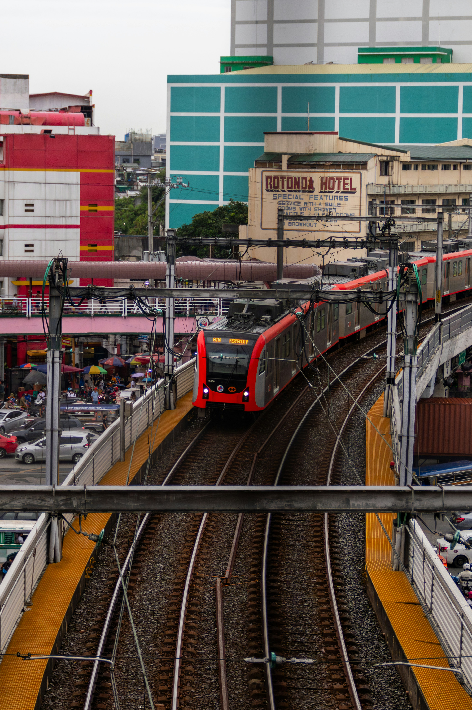
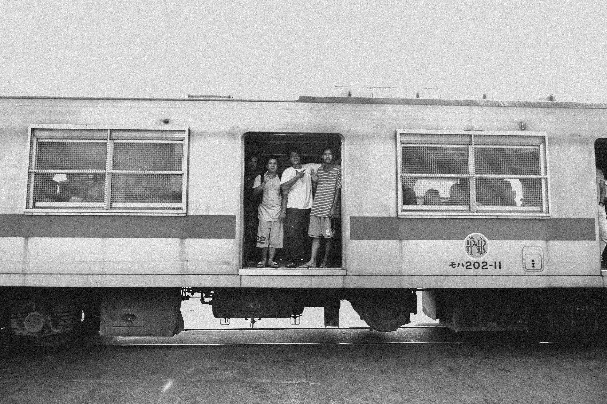
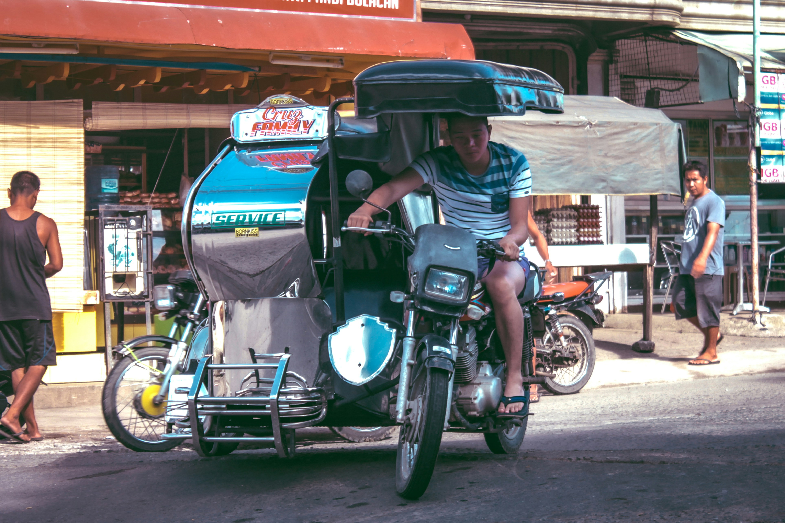
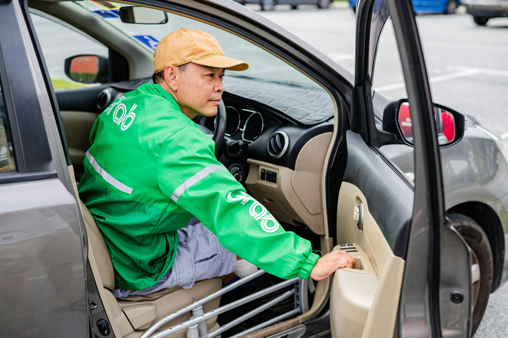

Jeepney

The most iconic transportation here in the Philippines. In fact, the Jeepney is often used as a symbol of our “identity”. Jeepneys operate like buses, and you can determine their routes by the signage placed on their windshield. However, given the lack of jeepney/bus stops, you have to call the attention of the driver whenever hailing one. If you intend to get-off the jeepney you need to say, “Para” which means “Stop”.
Bus

This is your typical bus that has a huge seating capacity. You might encounter buses with no air-conditioning unit, so you may want to skip those if you want a more comfortable ride. As trivia, buses here in country are privatized.
LRT/MRT

Due to the “faster” travel time of LRT/MRT, many of us Filipinos rely on it for our daily commute. Unfortunately, there are cases wherein the trains (MRT more frequently) experience malfunction which then disrupts the entire transportation system.The good news is there's continuous expansion underway, and some of the trains were already replaced/modernized.
PNR

The Philippine National Railroad was the first to efficiently move passengers in the metro. Overtime, it started deteriorating due to typical wear and tear. It also did not experience much upgrade, since train parts became obsolete/difficult to source elsewhere. Still, it was a good thing that they were able to install air-conditioning units in the trains.
Tricycle

Tricycles are another alternative for your transportation needs. It functions both as a “jeepney” (regular fare) and a “taxi” (special fare).Note that tricycles are prohibited in main roads.
Taxi

The culture of taxi is way different here in the Philippines. They normally have the upper hand, when it comes to destination and routes.
Grab

Grab is an app-based raid-hailing solution. You’ll be doing your ride bookings via the app, and you have the option to either pay in cash or thru credit card.
Angkas

If you’re looking for a more adventurous mode of transportation in the Philippines, Angkas is the perfect choice for you! It is a transportation app similar to Grab, except it only offers motorcycle rides. There are many promo codes to watch out for on the app, so make sure to stay tuned to their social media platforms.Similar to Grab, you also need a local sim card to register and use Angkas. If you don’t have one, Abraham Manila’s front desk officer can aid you.